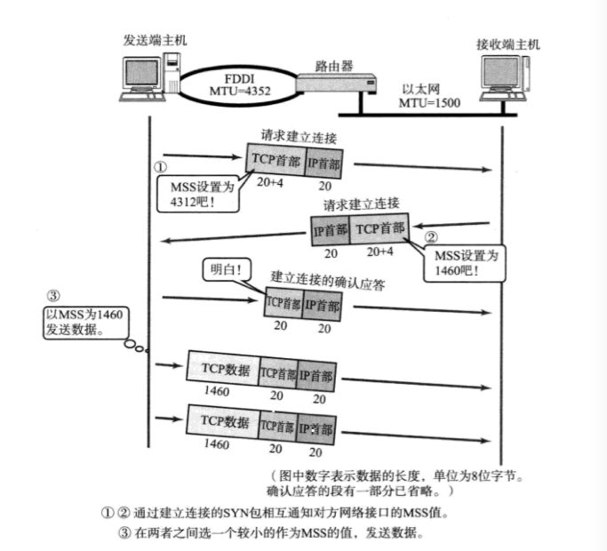

TCP用于在传输层有必要实现可靠传输的情况；
UDP主要用于对高速传输和实时性有较高要求的通信或多播、广播通信；
UDP - User Datagram Protocol
UDP不提供复杂的控制机制，利用IP提供面向无连接的通信服务。
UDP的细节控制需要采用UDP的应用程序来处理：
- 即使出现网络拥堵的情况下，UDP也无法进行流量控制等避免网络拥塞的情况；
- 即使传输过程中出现丢包，UDP也不负责重发；
- 数据包的到达顺序乱掉时也没有纠正的能力；
UDP的应用场景：
- 包总量较少的通信（DNS、SNMP等）
- 视频、音频等多媒体通信（即时通信）
- 限定于LAN等特定网络的应用通信
- 广播通信（广播、多播）
UDP首部格式
UDP首部由4个字段组成，每个字段的长度都是2个字节。
源端口号：可选，不需要返回通信时设置为0；
目标端口号
包长度：UDP首部长度+UDP数据长度，最小为8，即只有UDP首部；
校验和：提供可靠的UDP首部和数据。如何计算UDP校验和
TCP
TCP通过检验和、序列号、确认应答、重发控制、连接管理以及窗口控制等机制实现可靠性传输。
通过序列号和确认应答提高可靠性
在TCP中，当发送端的数据到达接收主机时，接收端主机会返回一个已收到消息的通知，即确认应答（ACK）;
重发控制：在一定时间内没有等到确认应答，发送端会认为数据已经丢失，并进行重发。（处理丢包问题）
- 数据丢失，未能发送到目标主机。
- 数据目标主机已经收到，只是返回的确认应答在途中丢失。
重复控制：目标主机需要识别是否已经接收数据，又能够判断是否需要接受数据；
序列号：按顺序给发送数据的每一个字节都标上号码的编号，接收端查询接受数据TCP首部中的序列号和数据的长度，将自己下一步应该接收的序号作为确认应答返送回去。
通过序列号和确认应答号，TCP实现确认应答处理、重发控制以及重复控制等功能，保证可靠传输。
重发超时：重发超时是指在重发数据之前，等待确认应答到来的时间间隔，如果超过了这个时间还没收到确认应答，发送端将进行数据重发。
连接管理
TCP提供面向有连接的通信传输，在数据通信开始前需要先做好通信两端之间的准备工作。
三次握手：

第一次握手：Client将标志位SYN置为1，随机产生一个值seq=J，并将该数据包发送给Server，Client进入SYN_SENT状态，等待Server确认。
第二次握手：Server收到数据包后由标志位SYN=1知道Client请求建立连接，Server将标志位SYN和ACK都置为1，ack=J+1，随机产生一个值seq=K，并将该数据包发送给Client以确认连接请求，Server进入SYN_RCVD状态。Host2进行连接确认，告诉host1可以进行连接。
第三次握手：Client收到确认后，检查ack是否为J+1，ACK是否为1，如果正确则将标志位ACK置为1，ack=K+1，并将该数据包发送给Server，Server检查ack是否为K+1，ACK是否为1，如果正确则连接建立成功，Client和Server进入ESTABLISHED状态，完成三次握手，随后Client与Server之间可以开始传输数据了。
四次挥手：
由于TCP连接时全双工的，因此，每个方向都必须要单独进行关闭，这一原则是当一方完成数据发送任务后，发送一个FIN来终止这一方向的连接，收到一个FIN只是意味着这一方向上没有数据流动了，即不会再收到数据了，但是在这个TCP连接上仍然能够发送数据，直到这一方向也发送了FIN。首先进行关闭的一方将执行主动关闭，而另一方则执行被动关闭，上图描述的即是如此。
第一次挥手：Client发送一个FIN，用来关闭Client到Server的数据传送，Client进入FIN_WAIT_1状态。FIN = 1，告诉host2我这边数据传完了，准备断开连接。
第二次挥手：Server收到FIN后，发送一个ACK给Client，确认序号为收到序号+1（与SYN相同，一个FIN占用一个序号），Server进入CLOSE_WAIT状态。
Host2不会立即发送fin=1关闭信息，而是先进性应答ack，表示：你的关闭信息收到，但我可能还没完，等会告诉你。
第三次挥手：host2向host1发送fin=1，请求关闭。Host1明白数据已经传完，可以断开连接了
第四次挥手：Client收到FIN后，Client进入TIME_WAIT状态，接着发送一个ACK给Server，确认序号为收到序号+1，Server进入CLOSED状态，完成四次挥手。
Host怕由于网络不稳定的原因，host2不知道他要断开连接，所以发送ack=1进行确认。
把自己设置成为TIME_WAIT启动计时器。
如果host2没有收到ack确认，计时器到时候，会要求host1重发ack；
如果收到了确认，host2断开连接，host1等待2倍的报文最大生存时间之后，没有收到重传的要求，直到host2 已经收到了ack，自己关闭。
TCP以段为单位发送数据
在建立TCP连接的同时，也可以确定发送数据包的单位，称为“最大消息长度”（MSS）。
最理想的情况是，最大消息长度正好是IP中不会被分片处理的最大数据长度。
TCP在传输大量数据时，是以MSS的大小将数据进行分割发送，进行重发时也是以MSS为单位。

利用窗口控制提高速度
滑动窗口
按数据包进行确认应答：TCP以1个段为单位，每发一个段进行一次确认应答的处理。缺点是包的往返时间越长通信性能就越低。
用滑动窗口方式并行处理：确认应答不再是以每个分段，而是以更大的单位进行确认时，转发时间将会被大幅度的缩短。
窗口大小：无需等待确认应答而可以继续发送数据的最大值。
滑动窗口与重发控制
考虑确认应答未能返回的情况：
在没有使用滑动窗口的时候，没有收到确认应答的数据都会被重发；
使用了滑动窗口控制，某些确认应答即便丢失也无需重发；

考虑报文丢失的情况：

流控制
TCP利用流控制可以让发送端根据接收端的实际接收能力控制发送的数据量。
TCP首部有一个字端用来通知窗口的大小，接收端主机将自己可以接受的缓冲区大小放入这个字段中通知发动端，于是发送端会发送不超过这个限度的数据。
拥塞控制
如果网络上的延时突然增加，那么，TCP对这个事做出的应对只有重传数据，但是，重传会导致网络的负担更重，于是会导致更大的延迟以及更多的丢包，于是，这个情况就会进入恶性循环被不断地放大。试想一下，如果一个网络内有成千上万的TCP连接都这么行事，那么马上就会形成“网络风暴”，TCP这个协议就会拖垮整个网络。
所以，TCP不能忽略网络上发生的事情，而无脑地一个劲地重发数据，对网络造成更大的伤害。对此TCP的设计理念是：
TCP不是一个自私的协议，当拥塞发生的时候，要做自我牺牲。就像交通阻塞一样，每个车都应该把路让出来，而不要再去抢路了。
拥塞控制主要是四个算法：1）慢启动，2）拥塞避免，3）拥塞发生，4）快速恢复
TCP首部格式
TCP中没有表示包长度和数据长度的字段，可由IP层获知TCP的包长度，由TCP的包长度可知数据的长度；
源端口号：16位
目标端口号：16位
序列号：32位，指发送数据的位置，每发送一次数据就累加一次该数据字节数的大小。
序列号是在建立连接时由计算机生成的随机数作为初始值，通过SYN包传给接收端主机。
在建立连接和断开连接时发送的SYN包和FIN包虽然不携带数据，但是也会作为一个字节增加对应的序列号；
确认应答号：32位，指下一次应该收到的数据的序列号。
数据偏移：4位， TCP 首部长度。
由于 TCP 报头的长度随 TCP 选项字段内容的不同而变化，因此报头中包含一个指定报头字段的字段。该字段以 32 比特为单位，所以报头长度一定是 32 比特的整数倍，有时需要在报头末尾补 0 。如果报头没有 TCP 选项字段，则报头长度值为 5 ，表示报头一个有 160 比特，即 20 字节。
保留：6位，用于扩展。一般设置为0，即使收到的包在该字段不为0，此包也不会被丢弃。
控制位：8位，设置为1时有效。按顺序依次为：URG、ACK、PSH、RST、SYN、FIN

窗口大小：16位，用于通知从确认应答号所指位置开始能够接收的数据大小（8位字节）。
如果窗口位0，表示可以发送窗口探测，但是这个数据必须是1个字节；
窗口大小与吞吐量：
TCP通信的最大吞吐量=窗口大小／往返时间
校验和：16位，计算TCP校验和
数据链路的FCS可以检查出有噪声干扰的通信途中是否位错误。
TCP、UDP的校验和可以检查出路由器内存故障或程序漏洞导致的数据被破坏。
紧急指针：16位，仅在 URG = 1 时才有意义。
选项：用于提高TCP的传输性能，根据数据偏移进行控制，长度最大为40字节。